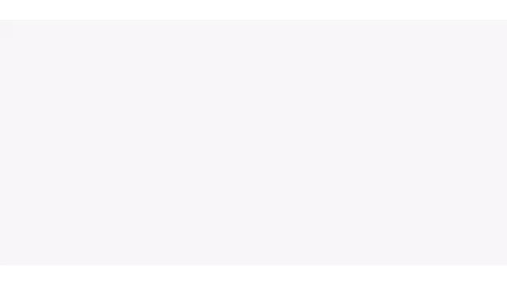
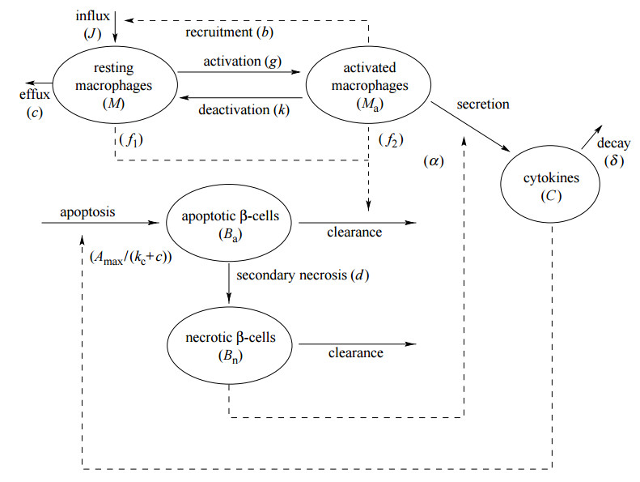

Idées
Vous avez une idée ? Vous ne savez pas par où commencer ? Nous pouvons vous aider. Nous travaillons avec vous pour cerner en profondeur vos défis et déterminer la meilleure marche à suivre.Algorithmes
Nous transformons votre idée en algorithmes et en logique métier soigneusement mis en œuvre, qui peuvent être intégrés en toute fluidité à vos flux de travail existants.Prototypes
La première étape est la plus difficile. Nous concevons un prototype fonctionnel pour vous aider à valider votre idée et à tester le marché.Histoires
Même les meilleures idées doivent être partagées pour avoir un impact. Nous ciblons votre public et présentons votre produit avec le niveau de détail technique approprié.À propos de nous
Nous apportons notre expertise en mathématiques et en développement logiciel pour automatiser des processus manuels chronophages et optimiser les algorithmes de calcul sur lesquels reposent ces activités.
Nous avons mis ces compétences au service du département de la Défense des États-Unis, notamment pour automatiser une tâche manuelle d'étiquetage de données qui prenait 6 heures, et pour concevoir des visualisations de l'activité cérébrale.
Grâce à une expérience allant de la recherche fondamentale au développement logiciel, nous pouvons nous intégrer aisément à toute équipe au sein de votre organisation et communiquer efficacement avec des interlocuteurs possédant des niveaux de connaissances techniques variés.
Projets sélectionnés
-
Identifier les postes des joueurs de la NFL
Automatisation d'un processus de 6 heures -

Pas de temps adaptatif local
Améliorer l'efficacité des simulations à grande échelle -

Modélisation du déclenchement du diabète de type 1
-
Comprendre l'influence
Identifier des tendances dans les comptes rendus de réunions
Vous souhaitez travailler avec nous ?
Nous sommes toujours ouverts aux projets intéressants.